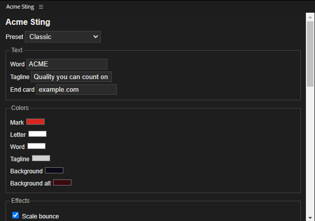

Usage
From the panel
- Open Window > Extensions > Acme Sting.
- Pick a preset. The form fills with its values.
- Change the word, tagline, end card, colors, or any effect. Each effect has a checkbox and its values.
- Click Build to create or replace the
Acme Stingcomposition inacme-sting.aep. - Click Render to build and render to MP4 through the render queue. Untick Render MP4 through the render queue to build without rendering.

Presets
| Preset | What changes from the defaults |
|---|---|
| Classic | The default reveal: scale bounce, fade, outline trim, light sweep, glow, shadow, typed word, tagline slide, drifting background, end card. |
| Shine | A full spin (360 degrees), stronger glow (2.0), lighter shadow, longer light sweep (1.2 s), and a lens flare. |
| Bounce | Bigger overshoot (25%), no outline trim, glow, or light sweep, a particle burst, a longer tagline slide (120), and no drifting background. |
A settings object overrides any preset value. Pass it as -OverridesJson to run-sting.ps1, or in the overrides field of the job.
Effects
| Effect | Default | Values | Notes |
|---|---|---|---|
| Scale bounce | On | Overshoot % (10) | Written as an expression, not hand-placed keyframes. |
| Fade in | On | Seconds (0.5) | |
| Spin in | Off | Degrees (540) | The mark spins into place. |
| Outline trim | On | Seconds (1.0) | Trim Paths draws the mark's outline on. |
| Light sweep | On | Seconds (1.0) | CC Light Sweep across the logo. |
| Glow | On | Intensity (1.2) | |
| Drop shadow | On | Opacity % (60), distance (12) | |
| Type on word | On | Seconds (0.7) | ACME types on. |
| Tagline slide | On | Distance (60) | The tagline slides up. |
| Flare or burst | On | Style: flare or burst | A lens flare or a particle burst at the reveal. |
| Drifting background | On | Speed (0.25) | Gradient background that drifts slowly. |
| End card | On | End card text | Shows example.com for the last second. |
If an effect is missing from After Effects, the script skips it and reports it in the result.
Command line
Run the launcher from the repository folder. It writes a job file to the temp folder, runs AfterFX.exe -s, waits for the result, and writes a GIF to docs\images.
.\acme-sting\run-sting.ps1 -Preset Shine -Name shine
.\acme-sting\run-sting.ps1 -Preset Classic -OverridesJson '{"effects":{"spin":{"on":true,"degrees":720}}}' -Name custom
.\acme-sting\run-sting.ps1 -Preset Bounce -NoRender
Logs, result files, and MP4s go to the system temp folder under acme-sting, not the repository.
Under the hood, each run sends a job to After Effects, for example:
"C:\Program Files\Adobe\Adobe After Effects 2026\Support Files\AfterFX.exe" -s "var stingJob = { preset: 'Shine', render: true, result: 'C:/Users/Jane Doe/AppData/Local/Temp/acme-sting/result.json' }; $.evalFile('C:/path/to/acme-sting/jsx/acme-sting.jsx');"
The job sets render to false to build without rendering. The result file records what was done, or the error and its line.
Render with aerender
After a build, you can render again from the saved project without After Effects' interface:
"C:\Program Files\Adobe\Adobe After Effects 2026\Support Files\aerender.exe" -project C:\path\to\acme-sting\acme-sting.aep -comp "Acme Sting" -OMtemplate "H.264 - Match Render Settings - 15 Mbps" -output %TEMP%\acme-sting\aerender-Classic.mp4
Run aerender only on a project that is not open in After Effects.